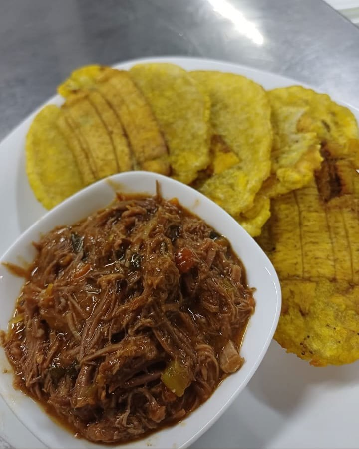
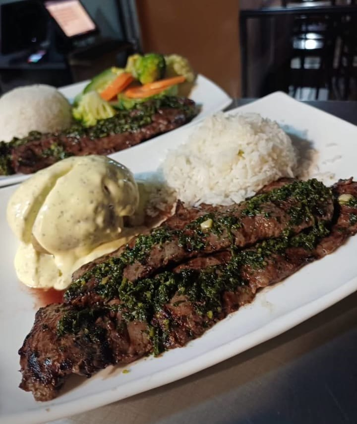
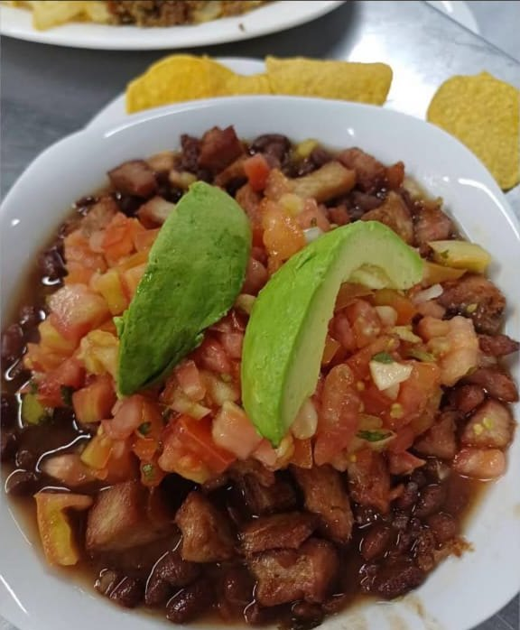
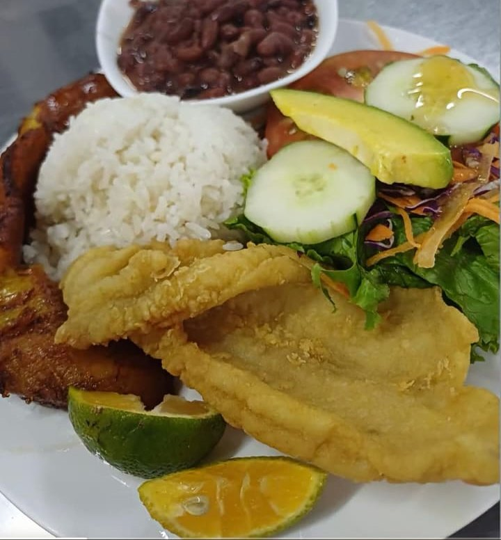
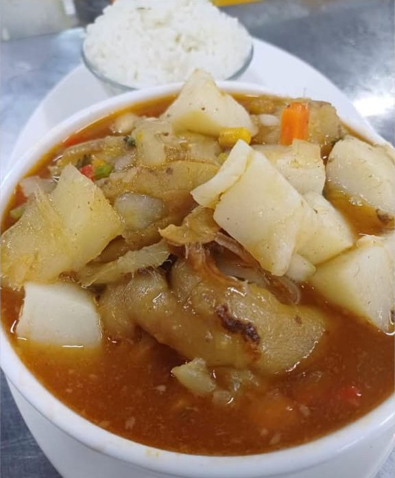
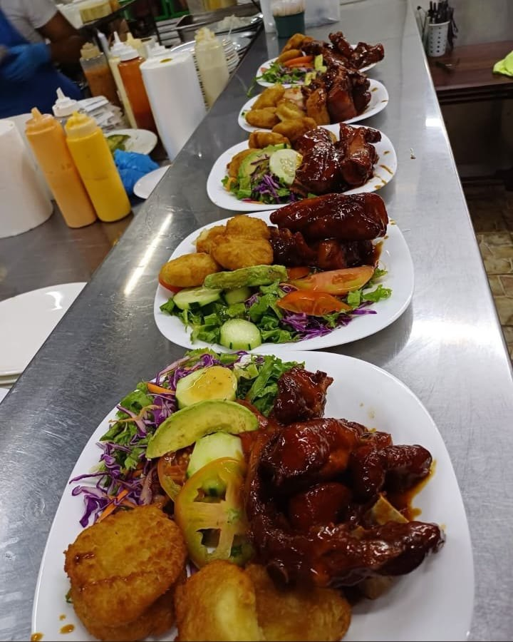
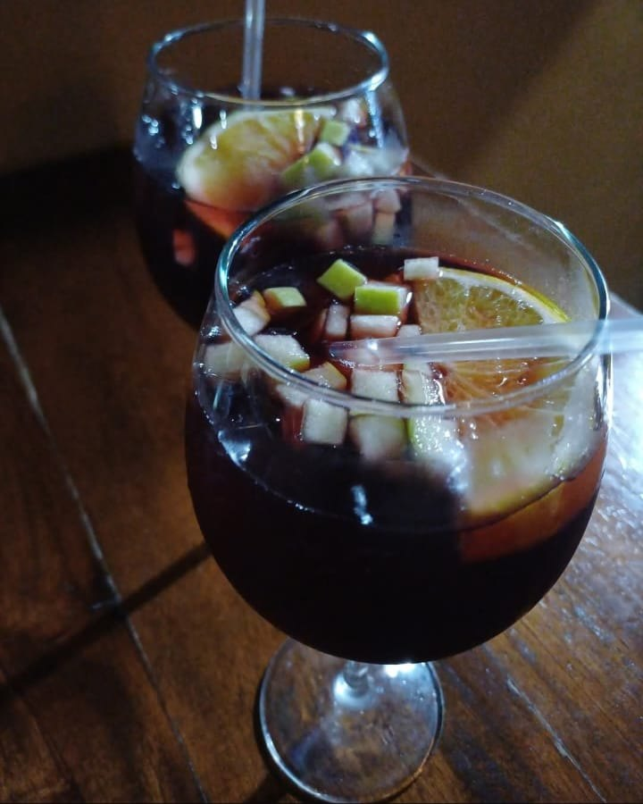
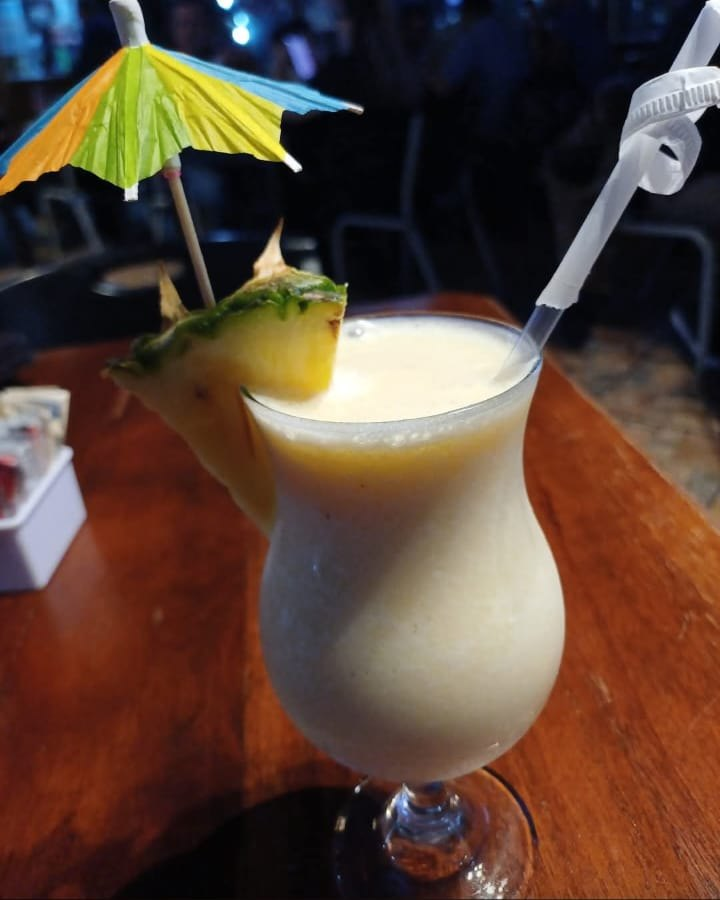
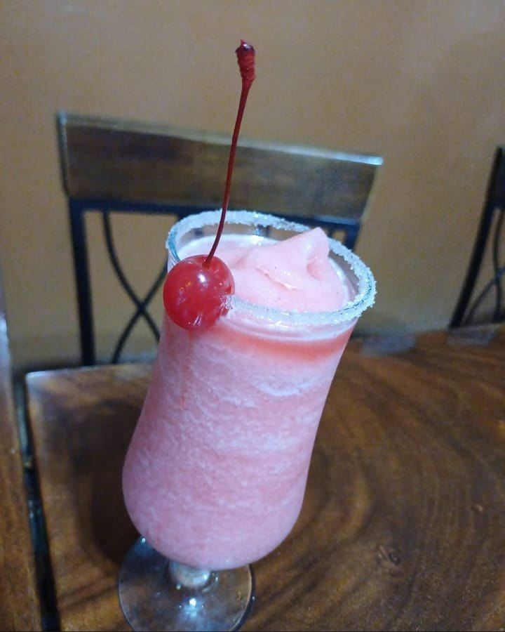
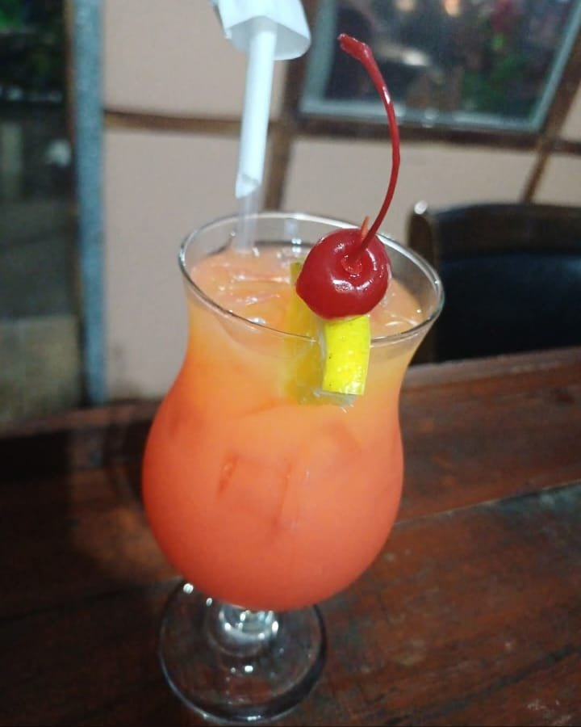

Comida
Casados, bocas y parrilla, con sabor de casa.





Comida casera bien tica, parrilla y cocteles, a pocos pasos del centro de Escazú.

Abrimos las puertas en 2012, en la tierra de las brujas. Desde entonces, un gran equipo cocina cada plato con amor y con calidad, como en casa.
Deslice hacia el lado para pasar de comida a bebidas y postres.
Casados, bocas y parrilla, con sabor de casa.





Cocteles de la barra, cervezas, naturales y café.




Para cerrar con algo dulce.
Pregunte en el local por los precios y la disponibilidad del día.
De la Municipalidad de Escazú centro, 350 metros al este. Escazú, San José, Costa Rica.